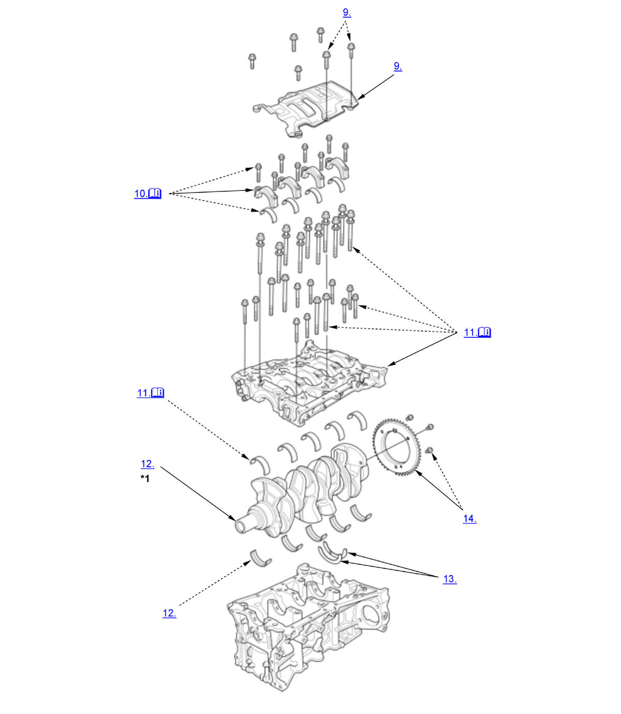

Crankshaft and CKP Pulse Plate Removal, Installation, and Inspection (K20C1) (2017 2018 2019 2020 2021): Removal: Procedure
NOTE:
Numbered call-outs in figure pertain to list numbers in following procedure.

Courtesy of HONDA, U.S.A., INC. |
Detailed information, notes, and precautions |
| *1 | These parts have inspection items. |
- Engine - Remove
- Transmission - Remove
- Pressure Plate, Clutch Disc, and Flywheel - Remove
- Transmission End Crankshaft Oil Seal - Remove
- Cylinder Head - Remove
- Oil Pan - Remove
- Oil Pump - Remove
- Oil Pump Chain and Crankshaft Sprocket - Remove
- Baffle Plate - Remove
- Connecting Rod Bearing Cap and Bearing Half - Remove
NOTE: Keep all connecting rod bearing caps and connecting rod bearings in order.
- Lower Block - Remove
1. Remove the 8 mm bolts in the sequence shown. 2. Remove the bearing cap bolts. To prevent warpage, loosen the bolts in sequence 1/3 turn at a time; repeat the sequence until all bolts are loosened. 3. Using a flat blade screwdriver, separate the lower block from the engine block in the places shown. NOTE: Keep all the bearings in order.
- Crankshaft - Remove
- Thrust Washer - Remove
- CKP Pulse Plate - Remove